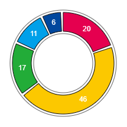
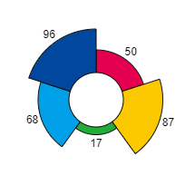
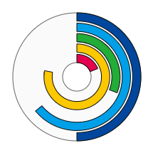

Home → Segment Chart
A segment chart is a graphical representation of data using segments that allows to quickly assess the relationship of several quantities (Fig. 1).
  
Fig. 1 - Round charts of types "pie", "radial", "bar" from left to right.
The following scripts should be included in the <head> section:
To create an object, the main parameters are passed to the constructor function. These parameters are used to create the base segment:
id - chart identificator as a text string.
context - CanvasRenderingContext2D for drawing the chart.
cx - X coordinate of the base segment center.
cy - Y coordinate of the base segment center.
r_in - base segment inner radius.
thickness - thickness of the base segment.
init_angle - the initial angle of the base segment in degrees. May take negative values.
angle - angle of the base segment in degrees.
Examples of using various properties and methods of the object.
type - chart type. Valid values:
"pie".
"radial".
"bar".source - source of chart data. The data source is specified as an array, the objects of which are data arrays:
[name, value, color].
data - an array of values retrieved from the data source.
min_value - minimum value of a data series.
max_value - maximum value of a data series.
total - total value of a data series.sign_r_in - chart signs inner radius.
sign_r_offset - radial offset of the signs.
font.
text_color.
text_border_width.
text_border_color.
text_direction. Valid values:"vertical".
"clockwise".
"anticlockwise".
"from-center".
"to-center".
gradient - fill gradient. Type of value is SegmentGradient.
background - fill color (applies if fill gradient is not specified).
border_width - base segment border width.
border_color - base segment border color.The borders of the base segment can be set separately using direct access to it through the base_segment property.
segments_count - the number of segments-elements of the array.
segment_angle - array segment angle (ignored if proportional flag is set in true).
segment_thickness - array segment thickness.
segment_position - array segments position. Valid values:"inner" - adjoining the inner border of the base segment.
"middle" - location in the middle of the base segment.
"outer" - adjoining the outer border of the base segment.segment_r_in - array segment inner radius. Ignored if property segment_position is set.
start_with - start placing objects on the base segment with segment or with empty space. Valid values:"segment" - start with segment.
"space" - start with empty space.space_angle - angle of space between segments.
space_thickness - thickness of space between segments.
segment_gradient - array segments fill gradient. Type of value is SegmentGradient.
segment_background - array segments fill color (applies if fill gradient is not specified).
segment_border_width - array segments border width.
segment_border_color - array segments border color.
proportional - value true provides the same angles for array segments and the distance between them.
full_thickness - value true provides the same thickness of array segments.
visible - value true ensures object visibility.
segments_visible - value true ensures segments visibility.
signs_visible - value true ensures signs visibility.
in_progress - flag takes the value true during the animation.
build() - performs basic calculations of the shape and style of the base segment and array elements, taking into account the specified properties and flags.
draw() - draws an object.
instanceCopy() - creates an independent copy of the object.
Events triggered by a SegmentChart are implemented using a CustomEvent.
In the detail.chart field, a link to the object itself is passed.
segment-chart-changed
segment-chart-appeared
segment-chart-disappeared
segment-chart-faded-in
segment-chart-faded-out
Home → Segment Chart